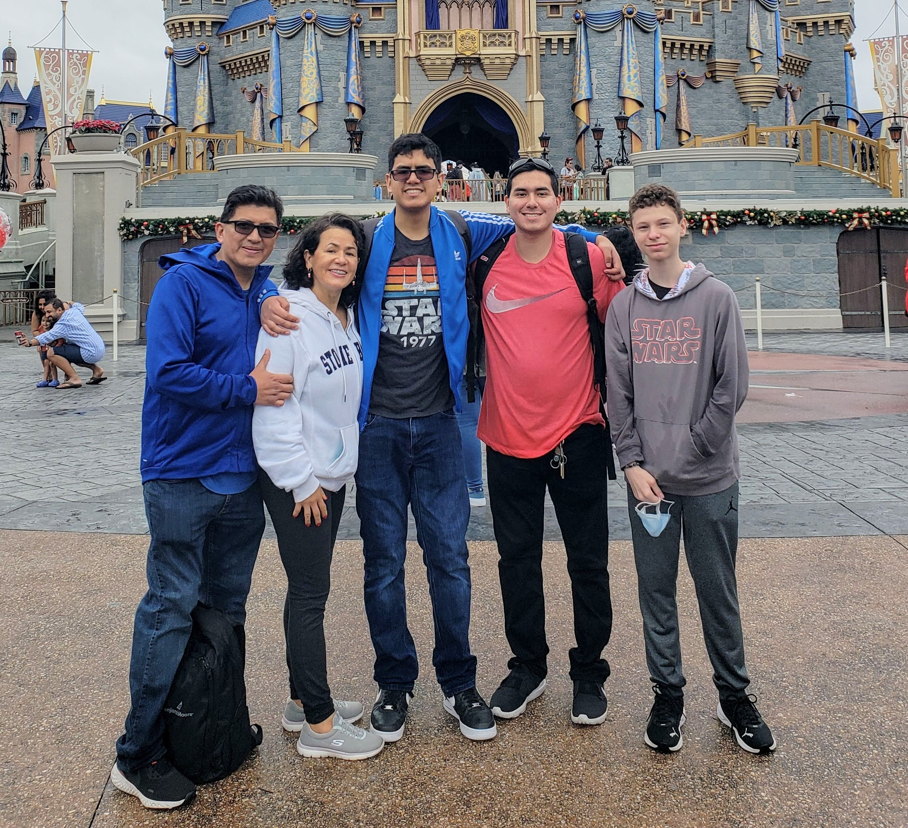
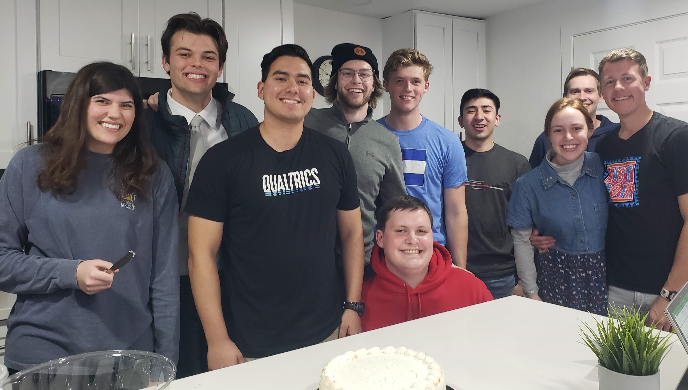

I grew in New Jersey and lived there my whole life with my parents and two siblings. After graduating high school, I served a full time mission in Peru for almost 2 years. I am currently a sophomore at Brigham Young University interested in marketing and entrepreneurship. I love creaing great experiences, serving others, spreading awareness of events, and working with others!

I enjoy being with those I care about, playing games, ice skating, going on adventures, watching movies, and cooking! I love animals, nature, learning cool facts about random things, and being observant of different situtations. My favorite pets are definitely dogs (I love dogs and I grew up a Jack Russel terrier)! One of my secret talents is great memorization with people and events. I remember small details well and usually don't forget.
I'm always down to have a good time and I'm very open about myself with everyone! Feel free to reach out!
Contact Info:
Phone Number: 999-999-9999 Email: danielsalazarfake@gmail.com